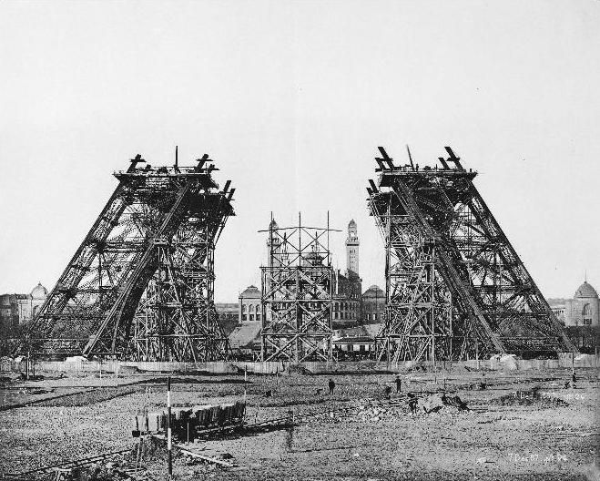
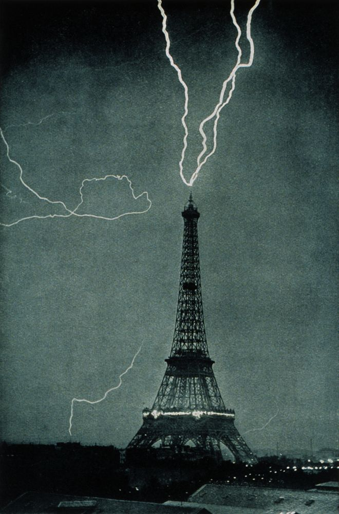

1Isıl genleşme
Maddeler ısındığında genleşir, soğuduğunda büzülür. Bunun sebebi, ısınan atomların daha hızlı titreşip birbirlerinden biraz uzaklaşmasıdır. Buna ısıl genleşme denir.
Günlük hayatta bunun birçok örneği vardır. Tren raylarının arasında küçük boşluklar bırakılır. Köprülerde 'genleşme derzi' denen, dişli tarağa benzeyen birleşim yerleri bulunur. Bunlar olmasa raylar ve köprüler sıcak havada bükülebilir.

2Eyfel Kulesi'nde ne oluyor?
Eyfel Kulesi, mühendis Gustave Eiffel'in şirketi tarafından 1889 Paris Dünya Fuarı için yapıldı. Kulenin iskeleti yaklaşık 18.000 demir parçanın 2,5 milyon perçinle birleştirilmesinden oluşur ve yaklaşık 7.300 ton demir içerir.
Yazın Paris'te sıcaklık yükseldiğinde bu demir genleşir ve kulenin boyu artar. Kışın soğukta ise demir büzülür ve kule kısalır. Kulenin resmî kaynaklarına göre bu değişim 15 cm'ye kadar çıkabilir.
3Güneşe göre eğilen kule
Isınma her zaman eşit olmaz. Güneşli bir günde kulenin Güneş'e bakan yüzü daha çok ısınır ve daha fazla genleşir. Gölgede kalan yüzü ise daha az genleşir.
Bu fark yüzünden kulenin tepesi Güneş'in tersi yönüne doğru birkaç santimetre eğilir. Güneş gün boyunca gökyüzünde hareket ettikçe tepe noktası da yavaşça yer değiştirir ve küçük bir yay çizer.

4Rüzgâr da sallıyor
Eiffel, kuleyi tasarlarken en çok rüzgârı hesaba kattı. Kulenin kafes yapısı rüzgârın içinden geçmesine izin verir ve rüzgâr yükünü azaltır. Kulenin ayaklarının kavisli biçimi de rüzgâr kuvvetlerine göre hesaplanmıştır.
Buna rağmen kule çok güçlü rüzgârlarda birkaç santimetre salınabilir. Bu tamamen güvenli ve tasarımın bir parçasıdır.
💡 Biliyor muydun?
- Eyfel Kulesi başlangıçta yalnızca 20 yıl ayakta kalacaktı. Telsiz anteni olarak işe yarar hâle gelince yıkılmaktan kurtuldu.
- Kule paslanmaya karşı yaklaşık her 7 yılda bir yeniden boyanır. Her boyamada yaklaşık 60 ton boya kullanılır.
- Kule 1930'a kadar dünyanın en yüksek insan yapımı yapısıydı. Bu unvanı New York'taki Chrysler Binası'na kaptırdı.
✅ Kaynaklar
📷 Görseller
- Kapak: Benh LIEU SONG · Public domain · Wikimedia Commons
- Eyfel Kulesi'nin inşaatı (1887-1889): Bilinmeyen yazar · Public domain · Wikimedia Commons
- 3 Haziran 1902'de Eyfel Kulesi'ne düşen yıldırım: Gabriel Loppé · Public domain · Wikimedia Commons